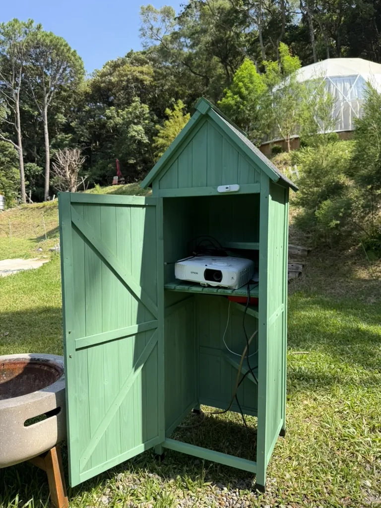
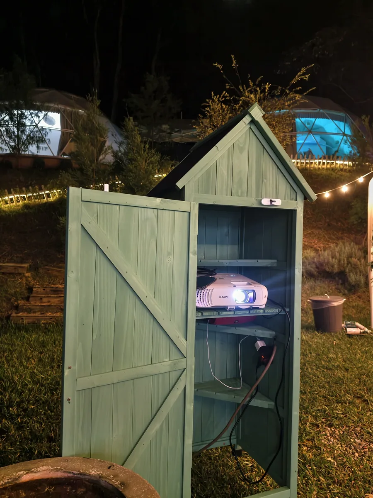
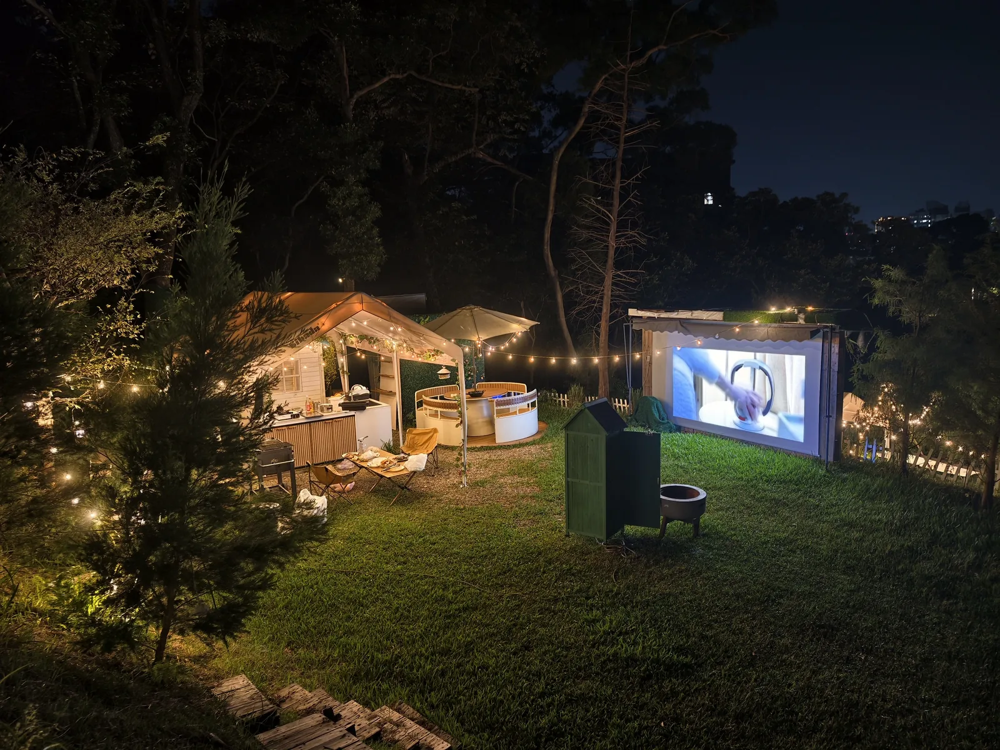
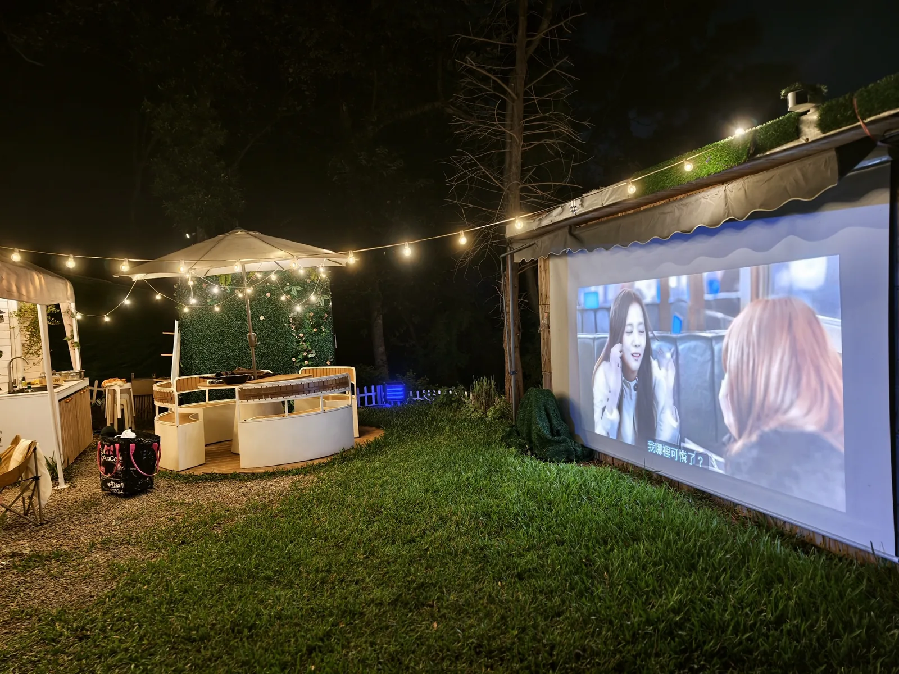

設備箱裡有什麼？
- Epson 戶外投影機
- Type-C 同屏接線
- 標準 HDMI 接線
- 藍牙喇叭
請使用入住前收到的熱氣球房密碼開啟設備箱，不需要另外記一組密碼。
快速記住：設備箱密碼與熱氣球房相同；投影機最右側是電源鍵，左邊是 Source Search。HDMI 1 使用現場 Type-C 同屏線；HDMI 2 使用標準 HDMI 線連接筆電。

請使用入住前收到的熱氣球房密碼開啟設備箱，不需要另外記一組密碼。

按下投影機機身最右邊的電源鍵。燈號開始閃爍時，表示燈泡正在預熱，請等待約20 秒，畫面就會出現在戶外大螢幕上。
電源鍵左邊是 Source Search（搜尋來源）。接好裝置後如果沒有畫面，再按這顆鍵搜尋訊號即可。
使用設備箱內已接好的 Type-C 線，連接支援影像輸出的 USB-C 手機或平板，即可把同一個畫面投影到大螢幕。這是有線同屏，穩定度較高；部分手機不支援 USB-C 影像輸出，請以裝置規格為準。
使用標準 HDMI 線連接筆記型電腦或其他 HDMI 裝置。接好後若沒有畫面，請按投影機電源鍵左側的 Source Search，切換到 HDMI 2。

